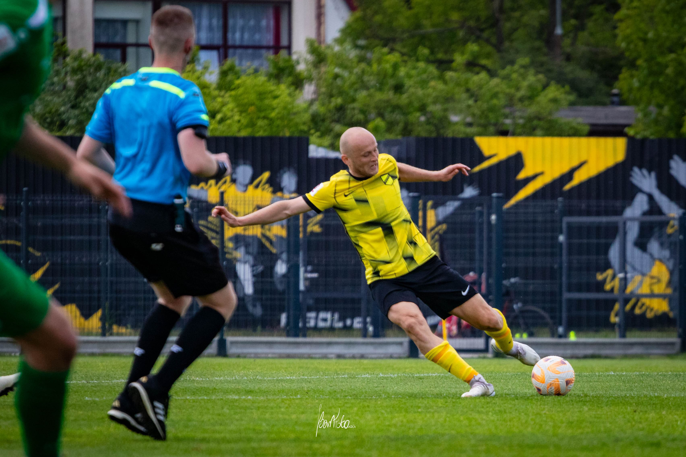
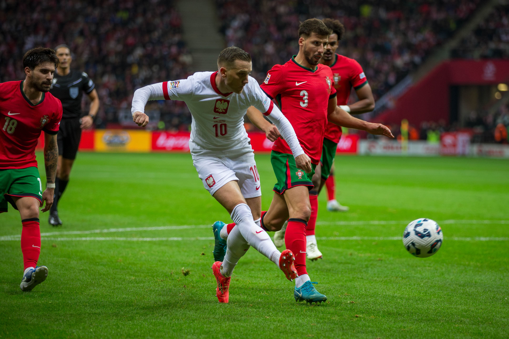
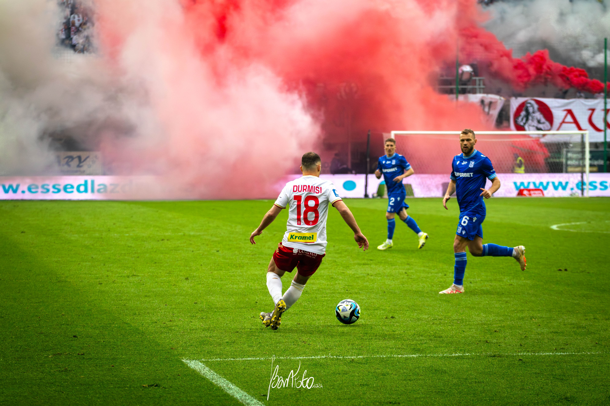
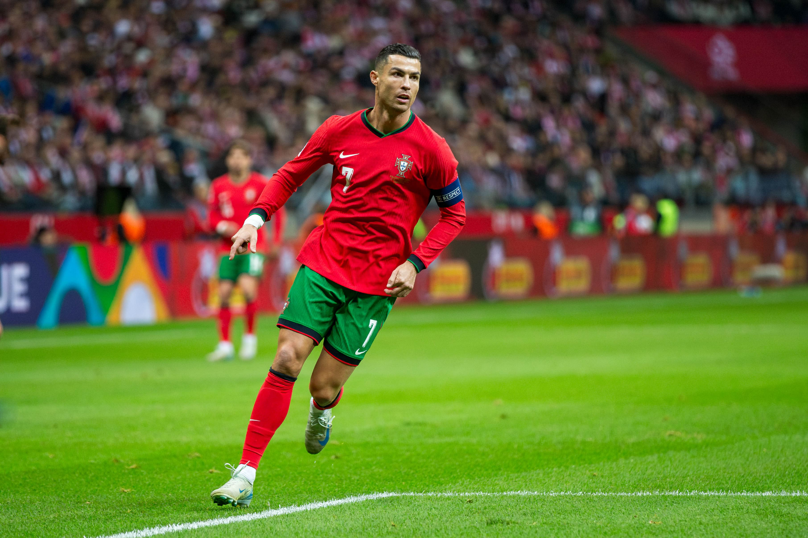
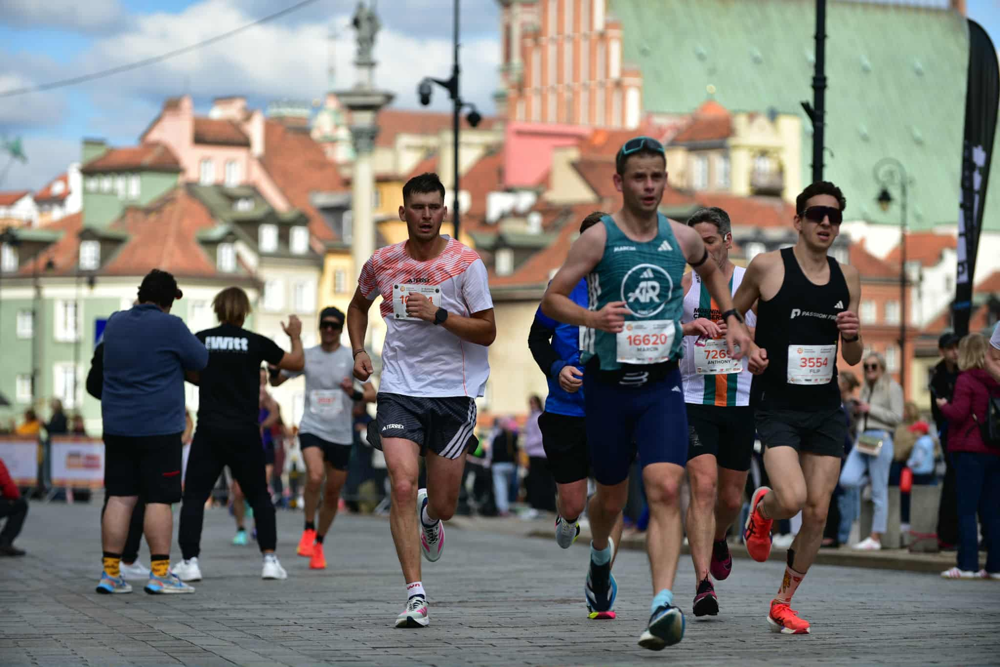
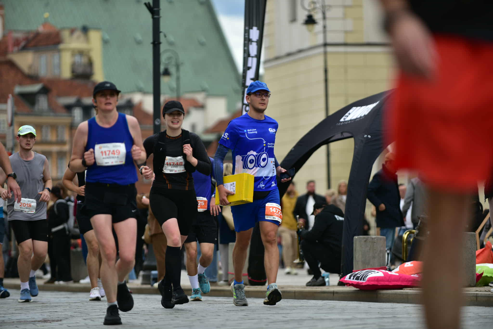
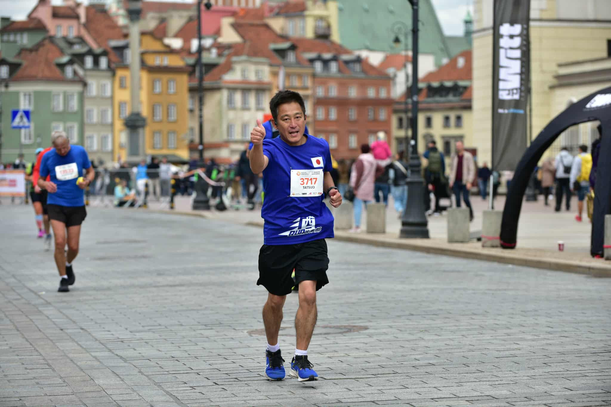

Wybrane kadry z ostatnich meczów — emocje, tempo i detale boiskowej walki.
Arkadiusz Reca - Legia Warszawa

Michał Pazdan - Wieczysta KrakówPogoń Grodzisk Mazowiecki - Lechia Gdańsk

Strzał Piotra Zielińskiego zakończony golem

Riza Durmisi - ŁKS Łódź”

Cristiano Ronaldo - Stadion Narodowy, Warszawa”AZS AWF Warszawa - sekcja piłki ręcznej”AZS AWF Warszawa - sekcja piłki ręcznej”

47. Nationale Nederlanden Maraton Warszawski”

47. Nationale Nederlanden Maraton Warszawski”

47. Nationale Nederlanden Maraton Warszawski”